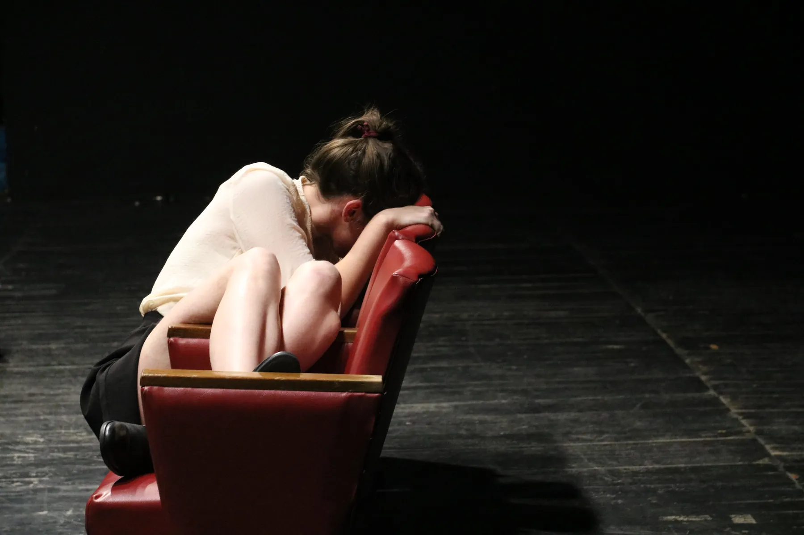
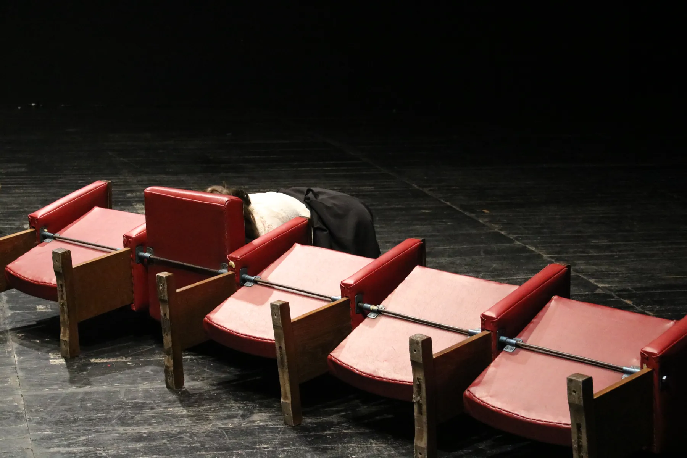
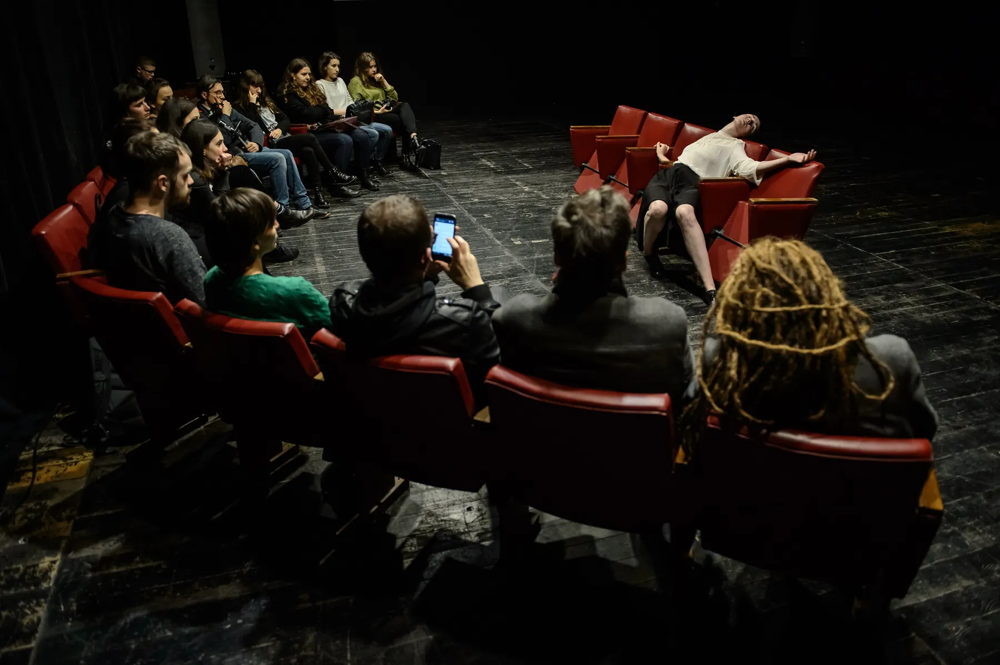
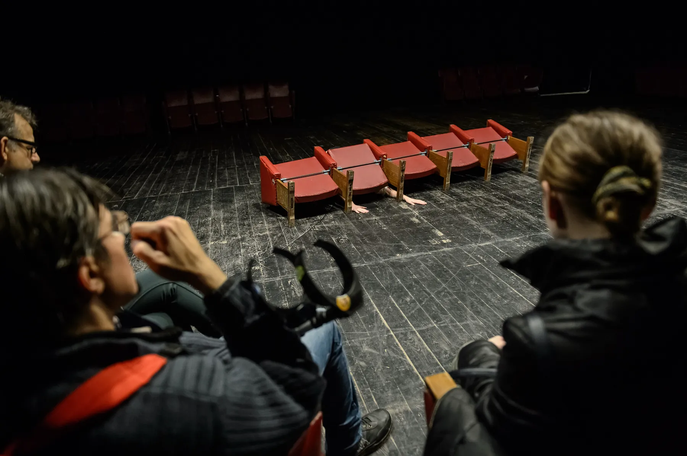
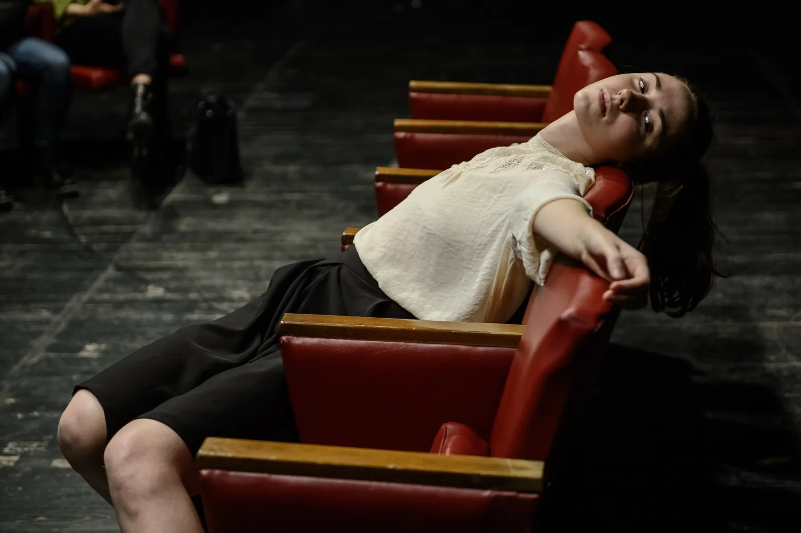
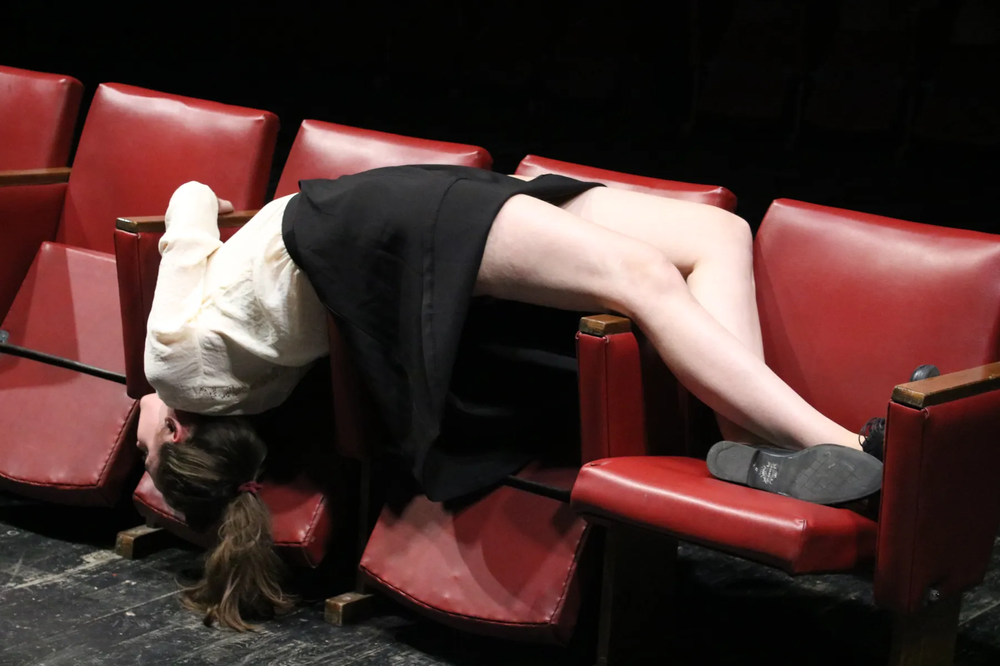

2017 / Lublin
BORDER
The solo work “Border”, presented at Performance Platform Lublin. Theatre seats shift from places for spectators into materials of action, destabilising the boundary between stage, audience and body.




